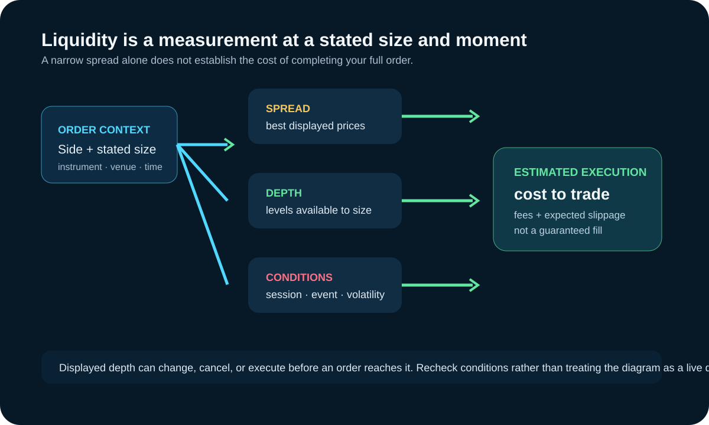

Market Liquidity Basics: Spread, Depth, Cost, and Execution
Updated September 19, 2026
Market liquidity is the ability to trade a stated quantity with limited delay and price impact. It is not simply the number of visible orders or the day's total volume. A useful review combines bid-ask spread, executable depth, cost to trade, trade frequency, order size, and the conditions under which the measurement was taken.

The main liquidity dimensions
| Measure | Question it helps answer | Limitation |
|---|---|---|
| Bid-ask spread | How far apart are the best displayed buy and sell prices? | Does not show how much can trade at those prices. |
| Book depth | How much displayed quantity rests across price levels? | Displayed orders can be changed, canceled, or executed. |
| Cost to trade | How far through the book might a stated order size execute? | Depends on size, side, timestamp, and available levels. |
| Volume and trade rate | How much and how often has trading occurred? | Past transactions do not guarantee future depth. |
Why order size matters
A one-contract order and a much larger order can face different average execution prices. Top-of-book spread alone can therefore understate expected cost. Estimate the full quantity against available levels and include fees, slippage, and the possibility that the book changes before execution.
Why liquidity changes
Liquidity can vary by contract month, session, scheduled event, volatility regime, holiday, and venue. Lower depth may accompany larger price changes, while rising volatility can also cause liquidity providers to quote less aggressively. The chart alone does not prove which effect came first.
A practical pre-trade check
- Confirm the exact instrument, active contract, venue, and session.
- Inspect spread and depth for the size you intend to trade.
- Check scheduled releases, exchange notices, and shortened sessions.
- Model slippage beyond the best quote and include commissions.
- Reduce size or stand aside when execution risk exceeds the plan.
For related mechanics, see market microstructure and volatility drivers.
Sources, scope, and change risk
Reviewed September 19, 2026 against the following first-party or regulatory sources:
Liquidity is instrument-, venue-, time-, and size-specific. Displayed depth is not guaranteed execution, and stop orders do not guarantee a fill at the stop price. Broker margins and platform displays can change.